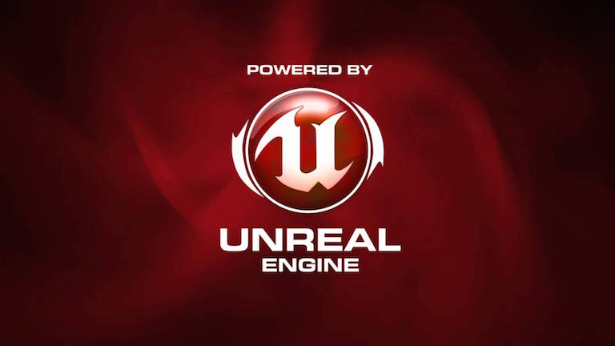

stepping into your vision
About

Unity | Programming | Audio
Hello there! Thank you for visiting my portfolio site.
Experience
Unity - Over 6 years of professional Unity development for VR, WebGL, and desktop apps.
Programming - Over 7 years of professional software development experience building various types of applications, including VR, websites, immersive training, automation, and data applications, among others. My expertise lies in real-time/game engine development.
Audio - Over 8 years of professional audio design and engineering for both interactive digital projects and film.
Approach
The pursuit of sound design and programming has shaped my life in extremely positive ways, and I predict this will remain the same as we continue to turn new corners at incredible speed with technology. I approach both practices with the understanding that there will always be more to learn and discover, as both are constantly changing and evolving, while the core fundamentals of each continue to hold fast and true, providing solid ground to jump off of when experimenting and exploring.
Engagement
I am comfortable working solo to knock out tasks but also enjoy working and collaborating with others. I value kindness and curiosity and will bring these to any project I am a part of. If you need a programmer, asset implementor, audio designer and/or editor for your project, I'd be excited at a chance to jump in and support! I'll bet we can build some amazing things together.
Projects
-

Evolve VR Content
Senior VR Developer & Audio Lead
Unity, C#, AWS, fmod
- Evolve
- Year : 2025
- created and updated several VR experiences: programming and development, asset integration, audio set-up and implementation, music selection, testing, app builds and deployment
Evolve builds a VR headset that focuses on biometric tracking and feedback. The VR content created for this headset focuses on helping individuals train their bodies to regulate themselves and their systems. As a Senior VR Developer at Evolve, I built several complete VR experiences and contributed to the other experiences made by the engineering team. I was responsible for all audio needs and updates and worked with their design contractor to ensure the sound was where it needed to be for each experience.
-

Pivotal Experiences
Senior Developer & Audio Lead
Unity, WebGL, C#, mobile, AWS
- Praxis Labs
- Year : 2021 - 2024
- all audio design, processing and integration, asset implementation, programming and development, testing, animation integration, Timeline, module builds and deployment
Praxis Labs, a Learning and Development (L&D) startup, builds research-backed immersive training experiences to high-impact enterprise customers. Its mission is to make workplaces, and ultimately society, more equitable. I was a Unity developer on the engineering team and became the Audio Lead within a few weeks of working there. I programmed features and tools, implemented assets, and handled all audio for the development of this product's thirteen playable experiences. While working on this product, I was promoted to Senior Developer and was responsible for collaboration with all departments to ensure quality and timely deployment from AWS onto WebGL.
-

Pivotal Experiences VR
Developer & Audio Lead
Unity, C#, VR, Quest, AWS
- Praxis Labs
- Year : 2021
- audio, asset implementation, programming and development, testing, animation integration, Timeline
The VR version of Pivotal Experiences with hand tracking for the Quest headset.
-

Pivotal Practice
Senior Developer
AI, Unity, C#, WebGL, AWS
- Praxis Labs
- Year : 2024
- AI implementation, audio processing, asset implementation, programming and development, testing, Timeline
Praxis Labs moved on to building a new product suite that uses AI to train employees. I implemented AI technology and built a few of these training modules almost entirely on my own.
-
Frontline Demo
Senior Developer
Unity, C#, JavaScript, Needle Engine, WebGL
- Praxis Labs
- Year : 2023
- programming and development, testing, Timeline, audio nodes in WebGL
A prototype made with Needle Tools to expand training offerings for frontline workers. Developed by Praxis Labs. The engineering team used this project to explore Needle Engine, a framework for making 3D web (including mobile web) experiences with Unity. I explored and researched how WebGL, Three.js, and Needle worked together to create the audio system. I also extended some of Unity's code to properly handle how the Audio Context system comes online when on the web.
-
Unbeaten Path
SFX Designer & Editor
Short Film
- Director : John Holowach
- Year : 2016
- audio editing, sfx
WARNING: Not for young viewers! Graphic images! A horror-western short, with lots of crunchy gore audio. The film won the Award of Merit at the 2016 Indiefest Film Awards in Los Angeles. You can see the entire short film here.
-

Medal of Honor
Audio Implementor
Unreal, PC, consoles
- Developer : Electronic Arts
- Year : 2010
- sound design, recording, foley, audio implementation into scenes, assets, and animation
In 2010, I had the privilege to work under some of the most talented individuals in the game audio industry. I had a contract gig with EA as an audio integrator for the modern release of Medal of Honor, which went on to be nominated for several audio awards. Working on this project with that amazing audio team taught me a lot about game audio and game development. It was an experience I continue to pull from in my creative pursuits.
-

Unbeaten Path
Audio Director
Audio Feature
- Director : John Holowach
- Year : 2015
- sound design, sfx, audio restoration, dialogue editing and clean up
The idea behind this project was to Narrate an entire script like an audiobook, but also include voice actors and detailed sound design. The final project ended up being as long as a full-length movie feature. Every second was accompanied by a soundscape that I created. From old-west style gunfights to an avalanche and a monster yeti, this project offered plenty of great sound design opportunities and problem-solving that I thoroughly enjoyed.
-

Master of Shadows
SFX Designer & Editor
Short Film
- Director : Nikka Far
- Year : 2016
- audio editing, sfx
A short about an Iranian boogeyman. A fun scary project, this one had some good bump sfx and creepy kid voices. The film was made for a website in Iran.
-

Nightfall
SFX Designer & Editor
TV Movie
- Director : Nikka Far
- Year : 2016
- audio editing, restoration and clean up, sfx
TV Movie that played in Iran about a young werewolf. I created some extra sound effects to go along with what had already been created. I also removed some audio artifacts to clean up some of the dialogue tracks.
-

Unreal Demo
Sound Design & Implementation
Unreal, PC
- Created by me
- sound design, sfx, audio implementation
I made this demo by replacing the sound effects in the video game with my own. I set up audio triggers and created every sound in the demo. The music is also my creation, but was not integrated into the game but was added to the video of the recorded gameplay.
Services
Programming
Tools: AWS, Git, Github, Visual Studio, Jetbrains, Unity, Needle
Languages: C#, .Net, JavaScript, JS frameworks, jquery, HTML, CSS, SQL
Apps: VR, Web Dev, WebGL, mobile, desktop, video game, Windows Services & installers
Unity
Tools: Profiler, Timeline, Cinemachine, Audio Mixer, Animator, Oculus XR, Dashboard, Cloud Build, Unity Version Control (Plastic SCM)
Skills: asset implementation, scripting, audio, animation implementation, UI, URP, Addressables, VR, WebGL, mobile, build pipeline, deployment
Audio
Tools: Logic Pro, fmod, Waves, iZotope, Bose, Zoom H4, Shure SM57
Skills: SFX, ambience, Foley, dialogue, field recording, cleanup, editing, mixing, programming
Music
Skills: composition, performance, recording, editing, tracks, stems, beats, MIDI sequencing